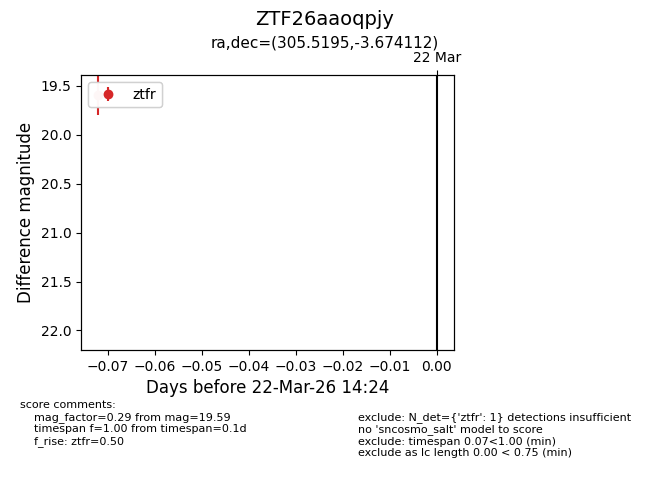
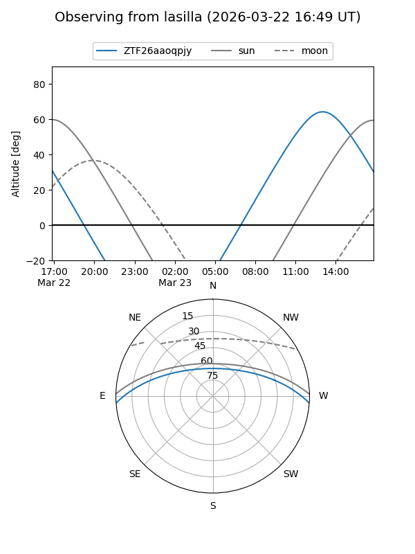
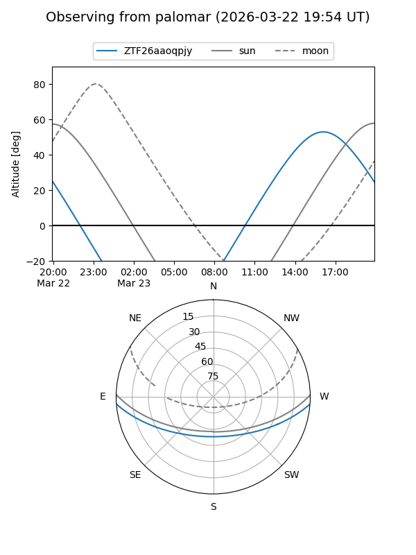

ZTF26aaoqpjy
Target ZTF26aaoqpjy at 2026-03-22 14:26
Aliases and brokers:
FINK: link
Lasair: link
ALeRCE: link
alt names
ZTF26aaoqpjy (ztf,fink_ztf)
Coordinates:
equatorial (ra, dec) = 305.5195,-3.67411
equatorial (HMS+DMS) = 20:22:04.68,-03:40:26.80
galactic (l, b) = (40.2509,-21.80163)
Flags:
Photometry:
last ztfr=19.59
1 ztfr detections
Lightcurve

Visibility


Additional plots